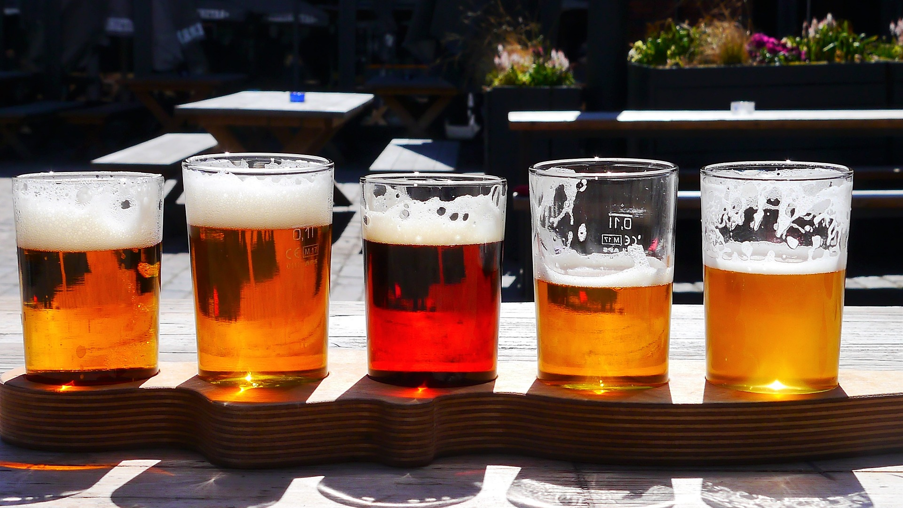

Our food is a labor of Love
At Neighbors Pizza, quality is everything. In a world where drive-thru’s are the norm and food
is often over-processed, prepackaged and always frozen, Neighbors sets itself apart by doing things
the old fashioned way. It’s a labor of love.
Our ingredients are locally sourced and always fresh!



There are no shortcuts at Neighbors. We only use local, fresh, delicious ingredients to make
not only the toppings stand out, but to make the taste of the crust explode.
Neopalitan Style Pizza
Neighbors Pizza offers neoplalitan style pizza cooked in a wood fired oven just like in Naples.
The dough is hand mixed, tossed and stretched. No large mixing machines in our kitchen.
Detroit Style Pizza
Neighbors Pizza offers Detroit Style Pizza that is even better and more natural than in Detroit.
Fresh Brick cheese, sweet tomato sauce, and hot honey all on a moist and fluffy sourdough crust that
melts in your mouth.
You got the party! We got the Pizza!
Birthdays! Game Day! Hump Day! Block Parties! Concerts! Weddings!
Funerals! Graduations! Office Parties! Got Divorced! Field Parties!
Neighbors fresh, delicious chicken party platters are perfect for any get-together.